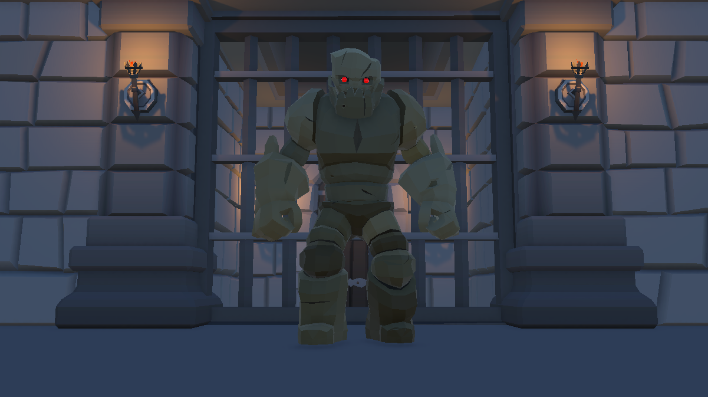

Why I Built It
This project was the capstone for a Virtual Reality course I took in Winter 2026. The goal of the project was to demonstrate our understanding of fundamental VR development principles, including object selection and manipulation, locomotion, and designing interactions that help reduce motion sickness.
I wanted to apply these concepts to something more engaging than a simple demonstration, so I decided to build a small VR combat game. This gave me an opportunity to combine the different techniques covered throughout the course into a single experience while also exploring the process of designing gameplay for a VR environment.
What I Built
I built a VR arena game where the player first selects the weapons they want to bring with them before entering the arena. Once inside, the player must fight an enemy known as the Warden and defeat it in order to unlock the gate at the end of the arena and escape.
The game incorporates a number of VR-specific interactions, including physically selecting and manipulating weapons, picking up and using objects, and navigating the environment using VR locomotion. The arena and combat system were designed around the limitations and considerations of VR, with an emphasis on keeping interactions intuitive and minimizing unnecessary movement that could contribute to motion sickness.
Technical Details
The game was developed in Unity using C# and the Meta XR framework. Many of the game's scripts were created from scratch, while others were adapted and expanded from systems developed earlier in the course.
The project involved combining these systems into a cohesive VR experience, including the game's weapon interactions, locomotion, combat, and progression systems.
